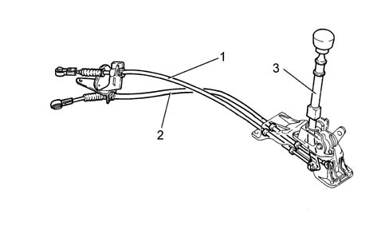

manual gearbox external control (cables)
- Path
- Descriptions > 21 GEARBOX > manual gearbox external control (cables)
- Kind
- system description
- Applies to
- engines: 2.0 TB, 2.4 20V, 2.4 JTD 10V; all production periods
- Interactive page
- https://sloeber94.github.io/elrnDB-lThss/en/#/202202
Applies to: all engines; all production periods
INTRODUCTION
The twin cable external control is made from plastic materials with high specifications (resistance to fatigue, lubrication properties, lightweight).
This type of control combined with the distribution of the inertia masses towards the gearbox has made it to possible to achieve:
- a high level of driving comfort due to the filtering action of the vibrations beause of the lightness of the external control components
- precise manoeuvring and a reduction in the matching clearances.
The external control is equipped with a Reverse gear inhibitor device which, by means of a travel inhibitor, guarantees greater safety against accidental manoeuvres.
The gear selector/engagement cables are adjusted by means of the special nut located near the gear selector lever [PR2125C30].

- 1. Gear engagement cable
- 2. Gear selector cable
- 3. Reverse gear engagement inhibitor